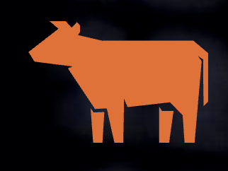
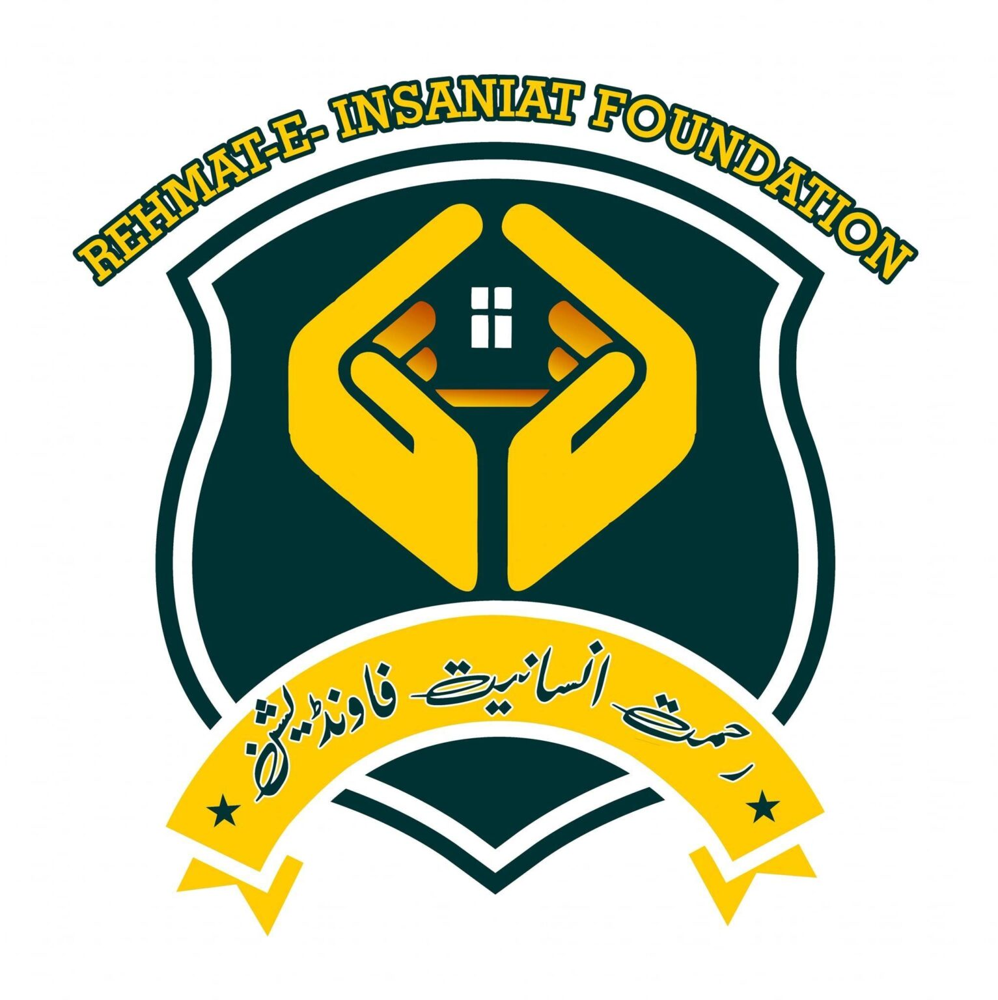

Industry Experience
Agentic AI, ML engineering, and community-first tech initiatives.
WarpShift · Canada
Founding Member · Sep 2025 – Present
- Revamping how real estate law is practiced across Canada!
- Automated Junior Lawyer Workflows with AI, already deployed in 50+ law firms in Ontario, Canada.
- Built agentic AI copilots that compress cross-functional workflows for distributed teams.

Cowlar Inc. (YC W17) · Islamabad
Machine Learning Engineer · Oct 2024 – Oct 2025
- Built PR-review LLM agents integrated with GitLab commands (85% MR backlog reduction, ~3× faster deploys).
- Automated end-to-end talent acquisition pipelines via LLM agents for sourcing, interviews, and scheduling.
- Shipped internal tooling that saved engineering + operations teams dozens of hours per sprint.
Cowlar Venture Studio
Machine Learning Engineer · Jul 2025 – Aug 2025
- Built ultra-fast voice agents for specialized flows within a confidential product line.
- Optimized stack for latency + reliability across ~80% of high-frequency user journeys.
Upwork
Data Scientist · Sep 2023 – Sep 2024
- Delivered bespoke ML solutions for startups navigating their first data products.
- Focused on model deployment, analytics, and mentoring founding teams on strategy.
Learn Right Now
Computer Science Counsellor · Mar 2023 – Jun 2023 · Islamabad, Pakistan
- Produced a college-level CS curriculum with production-grade videos, assignments, and projects.
- Advised students on academic + career decisions while curating supplemental resources.

Rehmat-e-Insaniat Foundation (NGO)
Backend Developer · May 2022 – Feb 2023 · Mandi Bahauddin, Pakistan
- Developed the official Django backend, improving transparency for donations + programs.
- Coordinated with on-ground teams to modernize internal tooling.